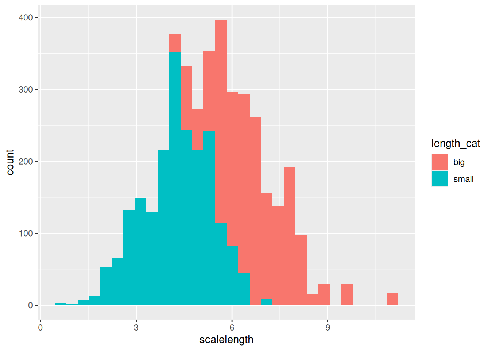

#install.packages("usethis")
library(usethis)Week 9: Version Control
Reproducibility
Version Control
git and GitHub
Using git and GitHub in RStudio
Introduction
Motivation
Get rid of messy folders and track changes to things like data files and code in a more manageable way.
Benefits of version control
- Track changes (but better)
- Tracks every change ever made in groups called commits
- Every commit stores the full state of all of your files at that time
- Never lose anything
- Revert or restore to any commit
- Easily unbreak your code/data/manuscript
- No more file name changes
- Tracks every change ever made in groups called commits
- Collaboration
- Work on things simultaneously
- See what changes others have made
- Everyone has the most recent version of everything
- Work on things simultaneously
Version control using Git & RStudio
Create a Git repo
- Navigate to Github in a web browser and login.
- Click the
+at the upper right corner of the page and chooseNew repository. - Choose the class organization (e.g.,
dcsemester) as theOwnerof the repo. - Fill in a
Repository namethat follows the formFirstnameLastname. - Select
Private. - Select
Initialize this repository with a README. - Click
Create Repository.
Connect to the Git repo in RStudio
- From new GitHub repository, click green
Clone or downloadbutton -> Click theCopy to clipboardbutton. - In RStudio, File -> New Project -> Version Control -> Git
- Paste copied URL in
Repository URL:. - Leave
Project directory name:blank; automatically given repo name. - Choose where to
Create project as subdirectory of:. - Click
Create Project. - Check to make sure you have a
Gittab in the upper right window.
Install
Introduce yourself to Git
library(usethis)
use_git_config(user.name = "[name]", user.email = "[email]")First commits
Commit data
- Download the data file Gaeta_etal_CLC_data.csv to your project directory.
- Add the data file to version control
- Two step process:
- Add the data file (checkbox)
- Commit it
- Git -> Select
Gaeta_etal_CLC_data.csv. - Commit with message.
Add fish size and growth rate data
- History:
- One commit
- Changes too large to see
Commit R script
- Read in data to new R script.
library(tidyverse)── Attaching core tidyverse packages ──────────────────────── tidyverse 2.0.0 ──
✔ dplyr 1.2.1 ✔ readr 2.2.0
✔ forcats 1.0.1 ✔ stringr 1.6.0
✔ ggplot2 4.0.2 ✔ tibble 3.3.1
✔ lubridate 1.9.5 ✔ tidyr 1.3.2
✔ purrr 1.2.1
── Conflicts ────────────────────────────────────────── tidyverse_conflicts() ──
✖ dplyr::filter() masks stats::filter()
✖ dplyr::lag() masks stats::lag()
ℹ Use the conflicted package (<http://conflicted.r-lib.org/>) to force all conflicts to become errorsfish_data <- read_csv("../data/Gaeta_etal_CLC_data.csv")Rows: 4033 Columns: 6
── Column specification ────────────────────────────────────────────────────────
Delimiter: ","
chr (2): lakeid, annnumber
dbl (4): fish_id, length, radii_length_mm, scalelength
ℹ Use `spec()` to retrieve the full column specification for this data.
ℹ Specify the column types or set `show_col_types = FALSE` to quiet this message.- Save as
fish-analysis.qmd. - Git -> Select
fish-analysis.qmd.- Changes in staged files will be included in next commit.
- Can also see changes by selecting
Diff
- Commit with message.
Start script comparing fish length and scale size
- History:
- Two commits
- See what changes were made to
fish-analysis.qmd
Building a history
fish-analysis.qmddoesn’t currently show on theGittab- No saved changes since last commit
- Add some more code to
fish-analysis.R- Create new categorical size column
fish_data_cat = fish_data |>
mutate(length_cat = if_else(length > 200, "big", "small"))- Save
fish-analysis.qmd. - Now we see the file on the
Gittab.Mindicates that it’s been modified.
- To commit these changes, we need to stage the file.
- Check the box next to
fish-analysis.R.
- Check the box next to
- Commit with message.
Add categorical fish length column
- History:
- Three commits
- Each
fish-analysis.Rcommit shows the additions we made in that commit.
- Modify this code in
fish-analysis.R- Change category cut-off size
fish_data_cat = fish_data %>%
mutate(length_cat = if_else(length > 300, "big", "small"))- Save file -> stage -> commit
Change size cutoff for new column- Green sections for added lines, red for deleted
- Git works line by line.
- The previous version of the line is shown as deleted.
- The new version of the line is shown as added.
Committing multiple files
- Commits can include multiple files at once
- Let’s move our data file into a
datasubdirectory New Folder->data- Checkbox
Gaeta_etal_CLC_data.csv->More->Move - Change code to read from new subdirectory
fish_data = read.csv("data/Gaeta_etal_CLC_data.csv")Changes to R script indicated by M
Original datafile has a red D next to it which indicates “deleted”
New, untracked, data directory
git initially thinks we’ve deleted
Gaeta_etal_CLC_data.csvand created a newGaeta_etal_CLC_data.csvfile in a new directory.Click on both the old and new files to stage them
git then recognizes that we have moved (or renamed) the file by making the two files into one and marking this with an
Rfor “rename”.Commit:
Move data file into subdirectory
Git as a time machine
Experiment with impunity
fish_data_cat = fish_data %>%
mutate(length_cat = ifelse(length > 300, "large", "small"))Saveand show changes are stagedMore->Revert->YesGet previous state of a file
History-> select commit ->View file @ ...- Save file over current file
- Copy and paste relevant piece into current file
Delete with impunity
- Both of these also work for deleted files
- Close the upper left window with the
fish-analysis.R. - Choose the
Filetab in the lower right window. - Select
fish-analysis.R->Delete->Yes - Stage deleted file ->
More->Revert->Yes
GitHub Remotes
- So far we’ve worked with a local
Gitrepository. - One of the big benefits of version control is easy collaboration.
- To do this, we synchronize our local changes with a remote repository called
origin. - Our remote repository is on GitHub.
- By far the most popular hosted version control site
- Public and private hosted repositories
- Private free for students and academics
- https://education.github.com/
- For the assignment, we’re using private repositories that we made at the beginning.
Push to a remote
Connect to GitHub
- To push to your remote we first have to connect to GitHub, which is a little tricky
- First, log in to GitHub in your browser
- Then create a GitHub token, this is like a special password just for one computer
usethis::create_github_token()Select defaults
Create token
Copy token
Now add this token our local git setup so that it can use it to connect to GitHub
gitcreds::gitcreds_set()- Paste your password
Push
Pushsends your recent commits to theoriginremote.- Before a
Pushyour commits show in your local history but not on the remote. - To
Pushto your remote, select thePushbutton at the top of theGittab. - Now your changes and commit history are also stored on the remote.
ggplot(fish_data_cat, aes(x = scalelength, fill = length_cat)) +
geom_histogram()`stat_bin()` using `bins = 30`. Pick better value `binwidth`.
Either you (logged in as another user) or your teaching partner should make the same change to your respository
Pulling
Big advantage to remotes is easy collaboration
Avoids emailing files and shared folders where you are never sure if you actually have the most recent version
Makes it easy to see what collaborators have done
Automatically combines non-overlapping changes
While I’ve been talking, a collaborator has added a plot of scale size and fish length to the code.
Pullthe changes from the remote repo with thePullbutton on the Git tab
Merges
Demo merges either with a partner or by logging into GitHub as another user in the browser.
What happens if two people make changes at the same time?
- If they edit different parts of the code git will combine them automatically
- If they edit the same areas of the code this requires human intervention
Merges
You decide to change the number of histogram bins to 10
geom_histogram(bins = 10)- Your collaborator reassesses the measurement device and decides it is accurate down to 0.5 mm and pushes the change to the remote repository [make this change in the remote]
filter(scalelength >= 0.5)- You try to push your change
- Get an error that shows someone else has made a change & you need to incorporate it to push
- Pull
- Merge happens automatically
- You have both sets of changes
- Remote still only has collaborators changes
- Push to add the merged version to the remote
Merge conflicts
If both you and your collaborator edit the same location in the code git doesn’t know how to combine the changes.
A human has to make this kind of decision.
You decide to change
"big"to"large"
mutate(length_cat = ifelse(length > 300, "large", "small"))- Your collaborator changes the size threshold and pushes to the remote
mutate(length_cat = ifelse(length > 250, "big", "small"))- You attempt to push your changes
- Merge conflict when pulling collaborators changes
- This shows as
Ufor “unmerged” in RStudio - First block of code is your version
- Second block is the version on the remote
- Combine into a single block that includes everything
mutate(length_cat = ifelse(length > 250, "large", "small"))- Click check box next to file
- Commit indicating that it is a merge
- Still not on remote yet
- Push